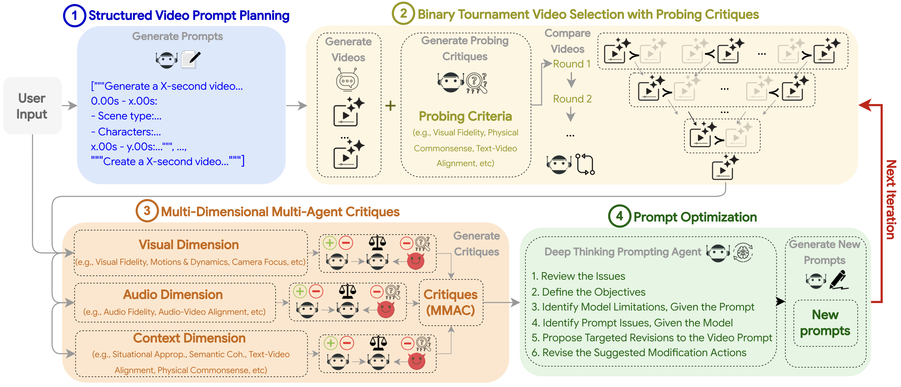

Despite rapid advances in text-to-video synthesis, generated video quality remains critically dependent
on precise user prompts. Existing test-time optimization methods, successful in other domains, struggle
with the multi-faceted nature of video. In this work, we introduce VISTA (Video Iterative Self-improvemenTAgent), a novel multi-agent system
that autonomously improves video generation through refining prompts in an iterative loop. VISTA first
decomposes a user's idea into a structured temporal plan. After generation, the best video is identified
through a robust pairwise tournament. This winning video is then critiqued by a trio of specialized
agents focusing on visual, audio, and contextual fidelity. Finally, a reasoning agent synthesizes this
feedback to introspectively rewrite and enhance the prompt for the next generation cycle. Experiments
on single- and multi-scene video generation scenarios show that while prior methods yield inconsistent
gains, VISTA consistently improves video quality and alignment with user intent, achieving up to 60%
pairwise win rate against state-of-the-art baselines. Human evaluators concur, preferring VISTA's
outputs in 66.4% of comparisons.
Overview of VISTA

VISTA is a modular, configurable framework for optimizing text-to-video generation. Given a user video prompt P, it produces an optimized video V* and its refined prompt P* through two phases: (i) Initialization and (ii) Self-Improvement, inspired by the human video optimization process via prompting. During (i), the prompt is parsed and planned into variants to generate candidate videos (Step 1), after which the best video-prompt pair is selected (Step 2). In (ii), the system generates multi-dimensional, multi-agent critiques (Step 3), refines the prompt (Step 4), produces new videos, and reselects the champion pair (Step 2). This phase continues until a stopping criterion is met or the maximum number of iterations is reached.
Direct Prompting (Original Prompt): A spaceship entering hyperdrive, stars streaking past as it accelerates.
VISTA (Ours):Create an 8-second, live-action, realistic sci-fi action video. The sequence initiates with a medium shot of a sleek, advanced spaceship...Create an 8-second, live-action, realistic sci-fi action video. The sequence initiates with a medium shot of a sleek, advanced spaceship, its engines beginning with a subtle glow that gradually intensifies, set against a vast, static starfield. This cosmic backdrop features diverse star densities, a distant, subtle galaxy arm, and a very subtle parallax effect to enhance depth perception. An ambient space hum is faintly audible. As the ship commences acceleration, the camera smoothly tracks its motion from a slightly elevated, rearward perspective. This acceleration is a deliberate, gradual build-up over the initial seconds, allowing the surrounding stars to dramatically streak, vividly conveying escalating speed. Precisely at the 4.5-second mark, the hyperdrive engages. The camera swiftly retreats and zooms out, maintaining the accelerating vessel in sharp focus while highlighting the intense, tunnel-like streaking of stars. Dynamic lighting on the ship subtly reacts to the intense streaking. A perceptible but minimal camera shake or vibration is present during the hyperdrive's most intense phase, contributing to tactile realism. The hyperdrive audio includes a distinct low-frequency rumble and a rich, layered texture, with enhanced sonic complexity during the sustained phase for maximum immersion. The video concludes with the spaceship fully enveloped in the brilliant hyperdrive effect, which then begins its smooth stabilization and gentle dissipation immediately after its peak intensity, ensuring this process is clearly visible and progressing towards a natural and seamless conclusion by the 8-second mark. The video must be free of text overlays and human narration.
Direct Prompting (Original Prompt): A single ice cube placed in a warm drink, slowly melting and sending gentle ripples through the liquid as it transforms.
VISTA (Ours):**Video Production Brief: Melting Ice Cube (8 Seconds)** - To create an 8-second video illustrating the User Prompt: "A single ice cube placed in a warm drink, slowly melting and sending gentle ripples through the liquid as it transforms."...**Video Production Brief: Melting Ice Cube (8 Seconds)**
**Objective:** To create an 8-second video illustrating the User Prompt: "A single ice cube placed in a warm drink, slowly melting and sending gentle ripples through the liquid as it transforms."
**Core Concept & Visuals:**
The video will be a singular, continuous close-up observation (0s-8s). The setting is an elegant, clear glass filled with a warm, inviting amber-toned liquid, potentially emitting a subtle wisp of steam. The background should be softly blurred and warm-toned (e.g., a wooden surface or cozy interior), ensuring the primary focus remains on the liquid and the ice.
A pristine, translucent ice cube, initially solid and angular, is to be gently introduced into the warm liquid. Upon immersion, it must visibly begin to melt and diminish in size. This melting process will generate delicate, concentric ripples that gracefully spread outwards across the liquid's surface from the point where the ice cube makes contact. The ice cube acts as the initiator of change and transformation, while the warm drink serves as the reactive medium.
**Audio Specifications:**
The sound design should be subtle and natural:
- A soft, distinct 'clink' as the ice cube touches the glass.
- A very subtle, almost imperceptible 'fizz' or 'crackle' as melting begins.
- Gentle, natural 'sloshing' or 'lapping' sounds accompanying the expanding ripples.
- A low, ambient hum conveying warmth (e.g., distant gentle kitchen sounds or a subtle, comforting room tone).
**Cinematography:**
The camera will start with a medium close-up, positioned slightly above the glass rim to capture the ice cube's introduction. A smooth, seamless transition will then occur to a tight, static macro shot. This macro shot will precisely focus on the ice cube's point of contact with the liquid and the immediate area where ripples form and spread, emphasizing the subtle movements and transformations.
**Atmosphere:**
The desired emotional tone is serene, contemplative, mesmerizing, and tranquil.
**Technical Directives:**
- The video must adhere to real-world physics; no cartoon or animated elements unless explicitly specified in the User Prompt.
- No multiple scene transitions are permitted, other than the single specified camera movement.
- No on-screen captions or subtitles.
- No human voice-over, unless the overarching message explicitly demands it.
- The video must commence smoothly, avoiding any abrupt or jarring openings.
- The ending must be complete and polished, with all actions fully delivered, avoiding sudden or unfinished cuts.
Direct Prompting (Original Prompt):The video is an educational animation designed for young children, teaching compound words through a visual and auditory puzzle format...{'overall_content': 'The video is an educational animation designed for young children, teaching compound words through a visual and auditory puzzle format. Each segment presents two individual words with corresponding cartoon images, which then combine to form a new compound word with a new image, all while a cheerful cartoon cat bounces at the bottom of the screen.', 'theme': 'The central theme is early childhood education, specifically focusing on vocabulary building and the concept of compound words in an engaging and interactive manner.', 'tone': "The overall tone is cheerful, educational, and highly engaging, designed to capture and maintain a child's attention with bright colors, simple animations, and a friendly voiceover.", 'scenes': [{'timestamp': '0-2.9', 'duration_seconds': 2.9, 'scene_type': 'Educational Word Puzzle: Ice Cream', 'characters': 'A cute, orange, cartoon cat with large eyes, rosy cheeks, and wearing red polka-dotted overalls, continuously bounces and sways at the bottom of the screen.', 'actions': "The scene begins with the word 'Ice' and an image of a blue ice cube appearing in a pink-framed white board at the top. A plus sign appears next to it. Then, the word 'Cream' and an image of a pink and yellow ice cream swirl appear. Finally, the two words and images merge to form 'Icecream' with an image of a pink ice cream cone. The cat character bounces rhythmically throughout.", 'dialogues': "A clear, enthusiastic voiceover pronounces: 'Ice', 'Cream', 'Icecream'.", 'visual_environment': 'The background is a vibrant sky blue, adorned with sparkling white star shapes that subtly twinkle. The main visual focus is a large, rectangular white board with a thick pink border, positioned at the top of the screen.', 'camera': 'Static shot, focusing on the top board and the bouncing cat. Elements within the board appear and disappear with quick cuts.', 'sounds': "Upbeat, cheerful background music plays continuously. A 'pop' sound effect accompanies the appearance of each word/image, and a 'ding' sound effect signifies the successful formation of the compound word. The voiceover is prominent.", 'moods': 'Joyful, educational, and stimulating.'}, {'timestamp': '2.9-5.8', 'duration_seconds': 2.9, 'scene_type': 'Educational Word Puzzle: Snowman', 'characters': 'The same cheerful, orange cartoon cat continues to bounce and sway at the bottom of the screen.', 'actions': "The background transitions from blue to a bright pink. The word 'Snow' and a blue snowflake appear in the top board, followed by a plus sign. Then, the word 'Man' and an image of a cartoon man (similar to the cat character but with human features and a shirt/tie) appear. These elements then combine to form 'Snowman' with an image of a classic snowman with a blue scarf and carrot nose. The cat maintains its rhythmic bouncing.", 'dialogues': "The voiceover pronounces: 'Snow', 'Man', 'Snowman'.", 'visual_environment': 'The background shifts to a bright, solid pink, still featuring the twinkling white stars. The pink-framed white board remains at the top.', 'camera': 'Static shot, with elements appearing and transforming within the frame.', 'sounds': "The cheerful background music continues. 'Pop' sound effects for new elements, 'ding' for the compound word, and the clear voiceover.", 'moods': 'Engaging, playful, and informative.'}, {'timestamp': '5.8-8.8', 'duration_seconds': 3.0, 'scene_type': 'Educational Word Puzzle: Popcorn', 'characters': 'The consistent orange cartoon cat continues its lively bouncing.', 'actions': "The background changes to a vivid green. The word 'Pop' and a colorful circular pop-it toy appear in the top board, followed by a plus sign. Next, the word 'Corn' and an image of three yellow corn cobs appear. These then merge to display 'Popcorn' with an image of a striped bucket filled with popcorn. The cat's bouncing is synchronized with the music.", 'dialogues': "The voiceover states: 'Pop', 'Corn', 'Popcorn'.", 'visual_environment': 'The background is now a bright green, maintaining the twinkling white stars. The pink-framed white board is still the central display area.', 'camera': 'Static, with dynamic content changes within the board.', 'sounds': "Continuous cheerful music, 'pop' and 'ding' sound effects, and the voiceover.", 'moods': 'Lively, educational, and fun.'}]}
VISTA (Ours):Create an 8-second animated educational video for young children, designed as an engaging visual and auditory puzzle to teach compound words...Create an 8-second animated educational video for young children, designed as an engaging visual and auditory puzzle to teach compound words. The core mechanism involves clearly presenting two individual words, each with its unique cartoon image, before they smoothly combine into a new compound word accompanied by its own distinct image. Throughout the video, a cheerful orange cartoon cat, characterized by large eyes, rosy cheeks, and red polka-dotted overalls, consistently bounces at the screen's bottom. The scene opens with a static shot of a pink-framed white board set against a vibrant sky blue background adorned with twinkling white stars. For the initial 2.9 seconds, 'Ice' and a blue ice cube gracefully appear on the board, followed by a smoothly scaling plus sign. Subsequently, 'Cream' and a pink and yellow ice cream swirl fluidly emerge. These elements then gently transform and merge to reveal 'Icecream' alongside a pink ice cream cone. An enthusiastic voiceover pronounces 'Ice', 'Cream', 'Icecream', complemented by upbeat music, 'pop' sound effects for new elements, and a 'ding' for the successful compound word. From 2.9 to 5.8 seconds, the background transitions to a bright pink. The puzzle continues as 'Snow' and a blue snowflake fluidly appear, followed by a scaling plus sign. Next, 'Man' and a cartoon man (resembling the cat but with human features and a shirt/tie) fluidly emerge. These seamlessly combine with a gentle transformation to form 'Snowman' with a classic snowman image. The voiceover guides with 'Snow', 'Man', 'Snowman', maintaining the cheerful music and sound effects. The final 3 seconds (5.8-8.8s) feature a vivid green background. 'Pop' and a colorful circular pop-it toy fluidly appear, followed by a scaling plus sign. Then, 'Corn' and three yellow corn cobs fluidly emerge. These elements, 'Pop' with its toy and 'Corn' with its cobs, seamlessly merge and gently transform into 'Popcorn' with a striped bucket of popcorn. The voiceover concludes with 'Pop', 'Corn', 'Popcorn'. The camera remains static, ensuring focus on the dynamic board content and the ever-present cat, delivering a lively, educational, and fun experience.
Direct Prompting (Original Prompt):An 8-second video begins outdoors on a bright, sunny day. A bearded man in a red cap, blue-tinted sunglasses, purple hoodie, and black headphones addresses the camera...An 8-second video begins outdoors on a bright, sunny day. A bearded man in a red cap, blue-tinted sunglasses, purple hoodie, and black headphones addresses the camera in a static, chest-up shot. The suburban street background is softly blurred, showing houses and greenery under a clear blue sky. His voice is clear as he poses the question "Which comedian is known for their deadpan delivery?" A black text box with white lettering appears at the bottom displaying the question. After a pause, he states "Jeff Dye" with a knowing smile. The text smoothly transitions to show "JEFF 'DYE'". At 5.5 seconds, the video fades to a minimalist white outro featuring "Master of Puns" text with a 3D glasses emoji above a "SUBSCRIBE!" button. A crisp pop sound concludes the video.
VISTA (Ours):The 8-second video opens outdoors on a vibrant, sunlit day. For the initial 5.5 seconds, the camera presents a static, chest-up, eye-level view of a man...{'prompt_name': "Trivia Master's Outdoor Riddle", 'prompt_description': 'The 8-second video opens outdoors on a vibrant, sunlit day. For the initial 5.5 seconds, the camera presents a static, chest-up, eye-level view of a man. The composition is artfully balanced, utilizing the shallow depth of field to enhance the subject\'s presence and create a visually engaging frame. He sports a full beard, a red baseball cap, black sunglasses with striking blue reflective lenses, a purple hoodie, and black over-ear headphones. Behind him, a gently blurred scene of a serene suburban street, complete with residential homes and abundant green foliage, stretches beneath a clear, light blue sky. The bright, sunny outdoor setting is bathed in a warm, inviting light, creating a subtly cinematic atmosphere. The reflections in his sunglasses are impeccably clean, free of any camera equipment or unwanted details, preserving visual immersion.\n\nA clear, warm, and resonant male voice speaks directly to the viewer. Faint, yet subtly varied, ambient street noise, including distant traffic and occasional natural outdoor sounds (e.g., a faint bird chirp or rustle of leaves), is audible in the background, adding to the immersive realism. The man asks, "Which comedian is known for their deadpan delivery?" Simultaneously, a sleek, black rectangular text box with white lettering gracefully emerges from the bottom, positioned subtly at the screen\'s center-bottom, displaying "WHICH COMEDIAN IS KNOWN FOR THEIR DEADPAN DELIVERY?". After a brief, expectant pause, he declares, "Jeff Dye." The text overlay then smoothly shifts: the question fades out as "JEFF \"DYE\"" fades in, maintaining its discreet size and placement. A subtle, knowing smile plays on his lips as he finishes.\n\nAt the 5.5-second mark, the video transitions from the live-action segment to the outro, marked by a quick fade to black followed by a fade in. The final 2.5 seconds showcase a pristine, minimalist white background. "Master of Puns" in black text, accompanied by a colorful 3D glasses emoji, is centered above a black rectangular "SUBSCRIBE!" button with a subtle grey border. A crisp \'pop\' sound effect signals the video\'s conclusion.'}
Direct Prompting (Original Prompt): An aerial view of a lush, green forest with a river winding through it, highlighting the contrast between the dense foliage and the clear water.
VISTA (Ours):Produce an 8-second establishing shot video centered on an aerial view of a lush, green forest traversed by a winding river...Produce an 8-second establishing shot video centered on an aerial view of a lush, green forest traversed by a winding river, specifically highlighting the contrast between the dense foliage and the clear water. The video should open with a high aerial shot of an expansive, verdant forest under late afternoon sunlight, revealing a broad, meandering river. Subsequently, the camera should smoothly descend and follow a winding segment of the river, emphasizing the crystal-clear water against the deep green foliage. This movement should showcase the river's serpentine course and the visual separation between the vibrant forest and the reflective water, occasionally exposing river stones. For audio, include an immersive forest soundscape with bird calls and rustling leaves. Crucially, incorporate prominent, dynamically spatialized flowing water sounds that realistically adjust in proximity and direction with the camera's movement to enhance the sense of depth.
Direct Prompting (Original Prompt): The person's forehead creased with worry as he listened to bad news.
VISTA (Ours):Generate an 8-second photorealistic video depicting a man's intense emotional reaction upon hearing distressing news. The video commences with a medium shot...Generate an 8-second photorealistic video depicting a man's intense emotional reaction upon hearing distressing news. The video commences with a medium shot of the man in a dimly lit, slightly disheveled home office. He is seated at a desk, his back partially turned, a phone held firmly to his ear. A slow camera arc reveals his profile, then a gentle push-in brings the viewer to a close-up. His expression subtly shifts from focused attention to profound worry, culminating in a deeply furrowed brow as the gravity of the news registers. For the entire 8-second duration, the phone remains perfectly still and pressed against his ear, serving as a silent, unmoving conduit of distress, visually static without any shifts or adjustments. The overall tone should be anxious, somber, and heavy. The sound design should be subtle and natural, primarily featuring the hushed ambient sounds of the quiet, enclosed home office. A very faint, almost imperceptible, low-frequency electronic hum should consistently emanate from the phone. Subtle environmental sounds, such as soft paper rustles or faint creaks, should enhance the sense of place without becoming distracting. The character's deep, distressed breath and a soft sigh must be clear, well-recorded, and precisely synchronized with his visual reaction. Subtle room acoustics, including a faint natural reverb, should effectively convey the enclosed nature of the space. All audio elements must be understated, enhancing emotional impact without distraction. Crucially, no sounds related to phone handling or movement are permitted. The video must adhere to real-world physics, contain no scene changes or cuts, and be devoid of captions, textual overlays, or spoken dialogue. It requires a smooth, gentle opening and a polished, complete conclusion.
Direct Prompting (Original Prompt):Craft an 8-second video showcasing the unbridled joy of children at play in a supermarket environment. A grey shopping cart holds a mischievous toddler...Craft an 8-second video showcasing the unbridled joy of children at play in a supermarket environment. A grey shopping cart holds a mischievous toddler, identifiable by a patterned jacket, blue pants, and red Mickey Mouse shoes. This toddler engages in a repetitive game, dropping a bright red box onto the grey tiled floor, each drop producing a clear 'thud'. An older girl, with long dark hair and a light-colored top, kneels nearby, demonstrating remarkable patience and playfulness as she consistently retrieves and returns the box. This interaction fuels the toddler's escalating delight, transforming soft giggles into booming, infectious laughter. The video is to be shot from a perfectly static, fixed low-angle camera, with no movement or shake, ensuring both children and the falling box are naturally framed. The older girl shares a warm, direct smile with the camera at a pivotal moment. The scene concludes with the toddler's triumphant, open-mouthed laughter, their face beaming with pure happiness as they look directly into the lens. Sound design is crucial, emphasizing the rhythmic 'thuds' and the children's contagious laughter, subtly layered with a faint, amused adult voice and the authentic hum and distant sounds of a busy supermarket. The overall effect should be a heartwarming and amusing vignette of innocent fun.
VISTA (Ours):From the comprehensive JSON video script, specific directives, and general constraints detailed below, create an 8-second video. The video captures a heartwarming and amusing interaction between a toddler seated in a shopping cart...From the comprehensive JSON video script, specific directives, and general constraints detailed below, create an 8-second video.
**Video Script (JSON Format):**
{'overall_content': 'The video captures a heartwarming and amusing interaction between a toddler seated in a shopping cart and an older child in a supermarket aisle. The toddler repeatedly drops a red box onto the floor, and the older child patiently and playfully picks it up and returns it, creating a loop of innocent fun and laughter.', 'theme': 'The central theme is the simple joy found in repetitive play, sibling interaction, and the infectious happiness of young children.', 'tone': 'The overall tone is joyful, lighthearted, and amusing, filled with the innocent delight of childhood play.', 'scenes': [{'timestamp': '0-1.5', 'duration_seconds': 1.5, 'scene_type': 'Playful drop and retrieve in a supermarket aisle', 'characters': 'A young toddler (likely a boy) with dark hair, wearing a patterned jacket, blue pants, red Mickey Mouse shoes, and striped socks, is seated in a grey shopping cart. An older child (a girl) with long dark hair, wearing a light-colored top, is on the floor. A partially visible adult is in the background.', 'actions': 'The toddler, with a mischievous grin, holds a red rectangular box and deliberately drops it onto the grey tiled floor. The box tumbles and lands with a soft thud. The older child quickly bends down to pick up the fallen box.', 'dialogues': "A distinct 'thud' sound as the box hits the floor. The toddler lets out a short, joyful vocalization.", 'visual_environment': 'The scene is set in a brightly lit supermarket aisle. Tall metal shelves filled with various products, including cleaning supplies and household items, line both sides of the aisle. The floor is light grey tile. The shopping cart is grey metal with a green handle.', 'camera': "The camera is held at a slightly low angle, focusing on the toddler in the shopping cart and the floor directly in front of it. It's a mostly static shot, capturing the action clearly, though with slight handheld movement.", 'sounds': "The primary sound is the 'thud' of the box, accompanied by the toddler's soft vocalizations. Faint ambient supermarket sounds are present.", 'moods': 'Amused, playful, innocent.'}, {'timestamp': '1.5-3.5', 'duration_seconds': 2.0, 'scene_type': 'Repetitive playful interaction', 'characters': 'The same toddler is still seated in the shopping cart, now holding the red box again. The older child is seen handing the box back to the toddler and then looking up at them.', 'actions': 'The toddler, with an even wider smile, immediately drops the red box again, watching it fall. The older child, having just returned the box, bends down once more to retrieve it. The toddler looks down at the older child, anticipating the pick-up.', 'dialogues': "Another clear 'thud' as the box lands. The toddler emits a louder, more excited giggle.", 'visual_environment': 'The supermarket aisle remains the same, with shelves of products visible. The bright fluorescent lighting illuminates the scene.', 'camera': 'The camera maintains its slightly low-angle position, with a slight, natural shake from being handheld, keeping the toddler and the immediate floor area in focus.', 'sounds': "The sound of the falling box and the toddler's infectious laughter are prominent. Background chatter and ambient supermarket noise continue.", 'moods': 'Joyful, repetitive, amusing.'}, {'timestamp': '3.5-5.5', 'duration_seconds': 2.0, 'scene_type': 'Continued playful loop with a smile', 'characters': 'The toddler is still in the cart, holding the box. The older child is now on the floor, having just picked up the box, and looks towards the camera with a bright smile.', 'actions': 'The older child, having just picked up the box, turns their head towards the camera and smiles broadly, acknowledging the playful situation. Shortly after, the toddler, with a look of pure delight, drops the red box for the third time.', 'dialogues': "The distinct 'thud' of the box is heard. The toddler's laughter is continuous and infectious. An adult voice can be heard saying 'Oh my god'.", 'visual_environment': "The supermarket setting is consistent, with shelves of products and the tiled floor. The lighting remains bright. The older child's direct gaze and smile towards the camera add a personal touch and are a key visual cue of the positive mood.", 'camera': 'The camera remains mostly static and low-angled, capturing the full interaction.', 'sounds': "The sound of the falling box and the toddler's joyful laughter dominate the audio.", 'moods': 'Happy, engaging, lighthearted.'}, {'timestamp': '5.5-7.5', 'duration_seconds': 2.0, 'scene_type': 'Final drop and triumphant laughter', 'characters': 'The toddler is still in the shopping cart, now laughing heartily. The older child is seen picking up the box one last time.', 'actions': 'The toddler drops the red box for the fourth time, this time with an even more pronounced, open-mouthed laugh. The older child bends down to pick it up. The toddler looks directly at the camera, beaming with pure joy.', 'dialogues': "The final 'thud' of the box. The toddler's loud, uninhibited, and infectious laughter fills the audio, clearly the highlight of the scene.", 'visual_environment': "The supermarket aisle, shelves, and lighting are unchanged. The focus remains on the children's interaction.", 'camera': "The camera maintains its mostly static, low-angle shot, perfectly framing the toddler's joyful expression and the repetitive action. The shot ends with the toddler's face full of laughter.", 'sounds': "The most prominent sound is the toddler's loud, joyful laughter, which is highly contagious. The 'thud' of the box is also present.", 'moods': 'Exuberant, joyful, triumphant, highly amusing.'}]
**Specific Directives for Video Generation:**
**[5.5s–7.5s]**:
- **Scene type**: Final drop and triumphant laughter
- **Camera Focus**: Maintains its mostly static, low-angle shot, perfectly framing the toddler's joyful expression and the repetitive action. The shot ends with the toddler's face full of laughter.
**General Constraints for Video Output**:
- The video must be non-cartoon obeying real-world physics, unless the User Prompt explicitly specifies it is cartoon/animated.
- Do **not** generate the video with multiple scene transitions, unless the Video Details have multiple transitions.
- Do **not** include any captions or subtitles.
- Do **not** generate any human voice-over unless the overall message explicitly requires.
- The video must begin smoothly—no abrupt or jarring openings.
- The ending must be complete and polished, with all character dialogue and actions fully delivered. Avoid any sudden or unfinished cuts.
Direct Prompting (Original Prompt): A couple runs through a sudden downpour, laughing and splashing in puddles as they try to find shelter.
VISTA (Ours):Produce an 8-second live-action video depicting the scenario: "A couple runs through a sudden downpour, laughing and splashing in puddles as they try to find shelter."...Produce an 8-second live-action video depicting the scenario: "A couple runs through a sudden downpour, laughing and splashing in puddles as they try to find shelter."
Video Specifications:
**[0s–8s]**:
- **Scene type**: Live-action
- **Camera Movement**: Throughout the 8-second duration, the camera should initially capture a medium, slightly low-angle shot, tracking the couple as they approach, emphasizing their splashing feet and joyful expressions. As they pass, the camera should subtly pan to maintain focus on their faces. Incorporate a subtle handheld feel for naturalism. The shot should conclude by widening as they run into the distance, still laughing.
Requirements:
- The content must be non-cartoon and adhere to real-world physics, unless otherwise specified in the user prompt.
- Do not include multiple scene transitions unless explicitly outlined in the Video Specifications.
- Subtitles and captions are prohibited.
- Human voice-over is not permitted unless the overall message necessitates it.
- The video must have a smooth opening and a complete, refined ending, ensuring all character actions and dialogue are fully delivered.
Citation
If you find our work useful, please consider citing:
@article{long2025vista,
title={VISTA: A Test-Time Self-Improving Video Generation Agent},
author={Long, Do Xuan and Wan, Xingchen and Nakhost, Hootan and Lee, Chen-Yu and Pfister, Tomas and Arik, Sercan O},
journal={arXiv preprint arXiv:2510.15831},
year={2025},
url={https://arxiv.org/abs/2510.15831}
}
 arXiv
arXiv